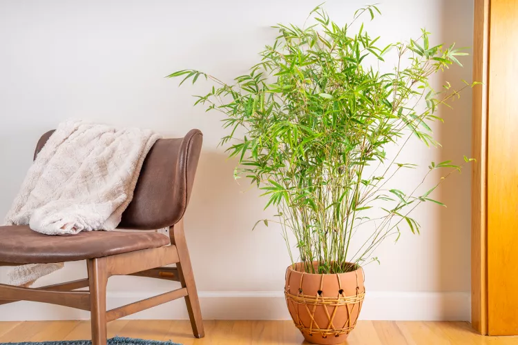

Fiddle-Leaf Fig
How to Grow and Care for Golden Bamboo Indoors
Golden bamboo (Phyllostachys aurea) is one of a few bamboo plants that can grow inside. Most bamboos require a lot of sun and humidity to grow well, which is not easy to achieve for indoor plants. Many confuse "lucky bamboo" plant (Dracaena species), a smaller bamboo-looking plant that grows in water, as an easy-growing indoor bamboo plant, but it is not a bamboo plant. Bamboo has over a thousand plant species, and several tower 50 feet or more in the wild. Golden bamboo is a true bamboo with bright green upright canes that turn golden with age and sunlight. It has narrow, lance-shaped leaves growing in clusters on
